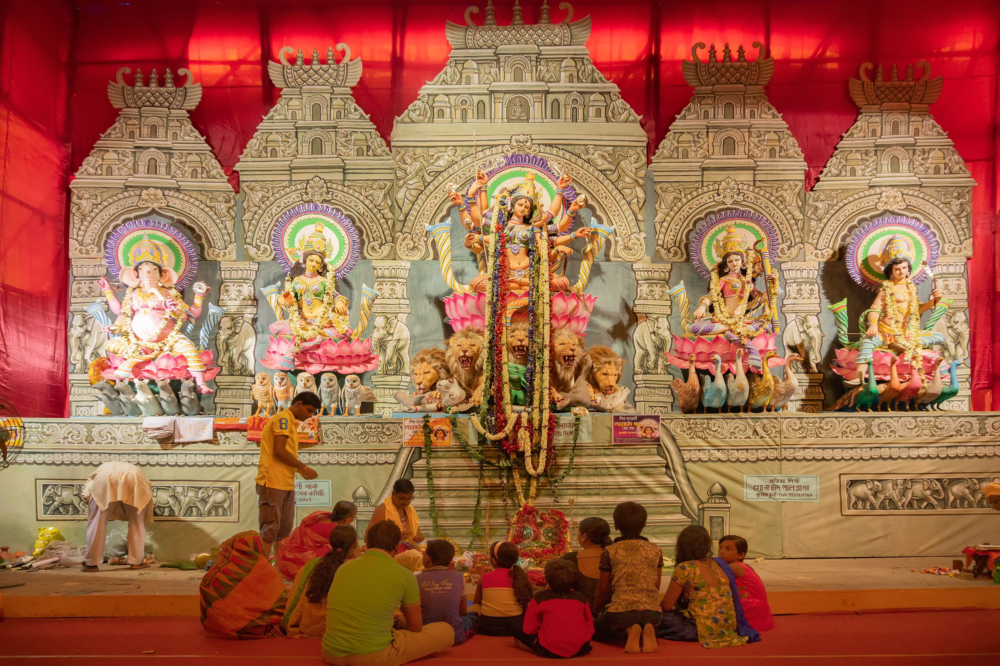

Durga Puja, also known as Durgotsava or Sharodotsav, is an annual festival originating in the Indian subcontinent which reveres and pays homage to the Hindu goddess Durga. It is particularly celebrated in the Eastern Indian states of West Bengal, Bihar, Jharkhand, eastern Uttar Pradesh, Assam, Odisha and by Hindus in Bangladesh.
The festival is observed in the Indian calendar month of Ashvin, which corresponds to September–October in the Gregorian calendar. Durga Puja is a ten-day festival, of which the last five are of the most significance. The puja is performed in homes and public, the latter featuring a temporary stage and structural decorations (known as pandals). The festival is also marked by scripture recitations, performance arts, revelry, gift-giving, family visits, feasting, and public processions.
Durga Puja is an important festival in the Shaktism tradition of Hinduism. As per Hindu scriptures, the festival marks the victory of goddess Durga in her battle against the shape-shifting asura, Mahishasura. Thus, the festival epitomizes the victory of good over evil, though it is also in part a harvest festival celebrating the goddess as the motherly power behind all of life and creation.